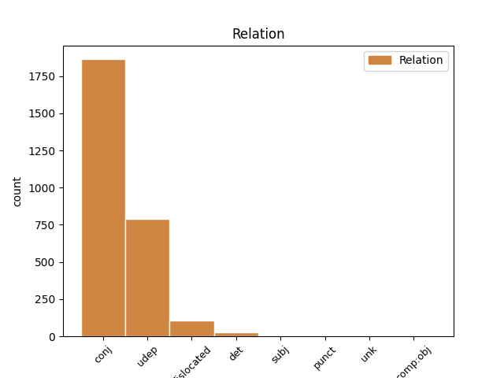
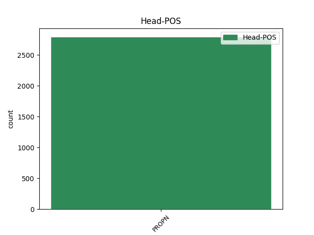
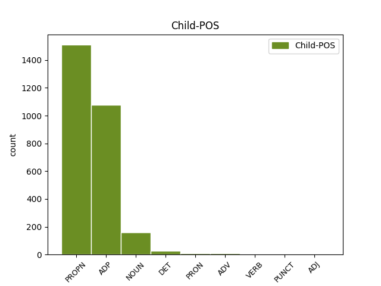

Distribution of features within this leaf



Agreement Rules sorted by frequency.
- When the dependent token is the conjunct(conj) of the head token, and the head token is PROPN
1 उन्होंने _ _ _ _ 0 _ _ _
2 कहा _ _ _ _ 0 _ _ _
3 कि _ _ _ _ 0 _ _ _
4 भारत भारत PROPN NNP Case=Nom|Gender=Masc|Number=Sing|Person=3 0 _ _ _
5 और _ _ _ _ 0 _ _ _
6 चीन चीन PROPN NNP Case=Nom|Gender=Masc|Number=Sing|Person=3 4 conj _ ChunkId=NP3|ChunkType=head|Tam=0|Translit=cīna|Vib=0
7 सर्वाधिक _ _ _ _ 0 _ _ _
8 आबादी _ _ _ _ 0 _ _ _
9 वाले _ _ _ _ 0 _ _ _
10 देश _ _ _ _ 0 _ _ _
11 हैं _ _ _ _ 0 _ _ _
12 । _ _ _ _ 0 _ _ _
1 कांग्रेसी _ _ _ _ 0 _ _ _
2 नेताओं _ _ _ _ 0 _ _ _
3 का _ _ _ _ 0 _ _ _
4 कहना _ _ _ _ 0 _ _ _
5 है _ _ _ _ 0 _ _ _
6 कि _ _ _ _ 0 _ _ _
7 महात्मा _ _ _ _ 0 _ _ _
8 गांधी _ _ _ _ 0 _ _ _
9 के का ADP PSP AdpType=Post|Case=Acc|Gender=Masc|Number=Sing 12 udep _ ChunkId=NP2|ChunkType=child|Translit=ke
10 ऐतिहासिक _ _ _ _ 0 _ _ _
11 दांडी _ _ _ _ 0 _ _ _
12 मार्च मार्च PROPN NNP Case=Acc|Gender=Masc|Number=Sing|Person=3 0 _ _ _
13 की _ _ _ _ 0 _ _ _
14 ७५वीं _ _ _ _ 0 _ _ _
15 बरसी _ _ _ _ 0 _ _ _
16 के _ _ _ _ 0 _ _ _
17 मौके _ _ _ _ 0 _ _ _
18 पर _ _ _ _ 0 _ _ _
19 आयोजित _ _ _ _ 0 _ _ _
20 मार्च _ _ _ _ 0 _ _ _
21 से _ _ _ _ 0 _ _ _
22 राज्य _ _ _ _ 0 _ _ _
23 में _ _ _ _ 0 _ _ _
24 पार्टी _ _ _ _ 0 _ _ _
25 की _ _ _ _ 0 _ _ _
26 स्थिति _ _ _ _ 0 _ _ _
27 सुधरी _ _ _ _ 0 _ _ _
28 है _ _ _ _ 0 _ _ _
29 । _ _ _ _ 0 _ _ _
1 पत्रिका _ _ _ _ 0 _ _ _
2 का _ _ _ _ 0 _ _ _
3 कहना _ _ _ _ 0 _ _ _
4 है _ _ _ _ 0 _ _ _
5 कि _ _ _ _ 0 _ _ _
6 अमेरिका _ _ _ _ 0 _ _ _
7 और _ _ _ _ 0 _ _ _
8 अंतर्राष्ट्रीय _ _ _ _ 0 _ _ _
9 परमाणु _ _ _ _ 0 _ _ _
10 ऊर्जा _ _ _ _ 0 _ _ _
11 एजेंसी एजेंसी PROPN NNP Case=Acc|Gender=Fem|Number=Sing|Person=3 0 _ _ _
12 ( _ _ _ _ 0 _ _ _
13 आईएईए _ _ _ _ 0 _ _ _
14 ) _ _ _ _ 0 _ _ _
15 के का ADP PSP AdpType=Post|Case=Acc|Gender=Masc|Number=Plur 11 dislocated _ ChunkId=FRAGP|ChunkType=head|Translit=ke
16 जाँच _ _ _ _ 0 _ _ _
17 - _ _ _ _ 0 _ _ _
18 कर्ताओं _ _ _ _ 0 _ _ _
19 का _ _ _ _ 0 _ _ _
20 मानना _ _ _ _ 0 _ _ _
21 है _ _ _ _ 0 _ _ _
22 कि _ _ _ _ 0 _ _ _
23 खान _ _ _ _ 0 _ _ _
24 ने _ _ _ _ 0 _ _ _
25 सऊदी _ _ _ _ 0 _ _ _
26 अरब _ _ _ _ 0 _ _ _
27 , _ _ _ _ 0 _ _ _
28 मिस्र _ _ _ _ 0 _ _ _
29 और _ _ _ _ 0 _ _ _
30 सूडान _ _ _ _ 0 _ _ _
31 , _ _ _ _ 0 _ _ _
32 आइवरी _ _ _ _ 0 _ _ _
33 कोस्ट _ _ _ _ 0 _ _ _
34 और _ _ _ _ 0 _ _ _
35 नाइजीरिया _ _ _ _ 0 _ _ _
36 जैसे _ _ _ _ 0 _ _ _
37 अफ्रीकी _ _ _ _ 0 _ _ _
38 देशों _ _ _ _ 0 _ _ _
39 की _ _ _ _ 0 _ _ _
40 भी _ _ _ _ 0 _ _ _
41 यात्रा _ _ _ _ 0 _ _ _
42 की _ _ _ _ 0 _ _ _
43 । _ _ _ _ 0 _ _ _
1 पर्यवेक्षकों _ _ _ _ 0 _ _ _
2 का _ _ _ _ 0 _ _ _
3 कहना _ _ _ _ 0 _ _ _
4 है _ _ _ _ 0 _ _ _
5 कि _ _ _ _ 0 _ _ _
6 इस यह DET DEM Case=Acc|Number=Sing|Person=3|PronType=Dem 7 det _ ChunkId=NP2|ChunkType=child|Translit=isa
7 मार्च मार्च PROPN NNP Case=Acc|Gender=Masc|Number=Sing|Person=3 0 _ _ _
8 के _ _ _ _ 0 _ _ _
9 दौरान _ _ _ _ 0 _ _ _
10 कांग्रेसियों _ _ _ _ 0 _ _ _
11 ने _ _ _ _ 0 _ _ _
12 भाजपा _ _ _ _ 0 _ _ _
13 का _ _ _ _ 0 _ _ _
14 जिक्र _ _ _ _ 0 _ _ _
15 करने _ _ _ _ 0 _ _ _
16 से _ _ _ _ 0 _ _ _
17 परहेज _ _ _ _ 0 _ _ _
18 कर _ _ _ _ 0 _ _ _
19 लोगों _ _ _ _ 0 _ _ _
20 में _ _ _ _ 0 _ _ _
21 यह _ _ _ _ 0 _ _ _
22 संदेश _ _ _ _ 0 _ _ _
23 दिया _ _ _ _ 0 _ _ _
24 कि _ _ _ _ 0 _ _ _
25 वह _ _ _ _ 0 _ _ _
26 गांधीवादी _ _ _ _ 0 _ _ _
27 विरासत _ _ _ _ 0 _ _ _
28 को _ _ _ _ 0 _ _ _
29 लेकर _ _ _ _ 0 _ _ _
30 भाजपा _ _ _ _ 0 _ _ _
31 या _ _ _ _ 0 _ _ _
32 किसी _ _ _ _ 0 _ _ _
33 अन्य _ _ _ _ 0 _ _ _
34 पार्टी _ _ _ _ 0 _ _ _
35 से _ _ _ _ 0 _ _ _
36 टकराव _ _ _ _ 0 _ _ _
37 नहीं _ _ _ _ 0 _ _ _
38 चाहती _ _ _ _ 0 _ _ _
39 है _ _ _ _ 0 _ _ _
40 । _ _ _ _ 0 _ _ _
1 निदेशक निदेशक NOUN NN Case=Acc|Gender=Masc|Number=Sing|Person=3 3 subj _ ChunkId=NP|ChunkType=head|Tam=0|Translit=nideśaka|Vib=0
2 मनु _ _ _ _ 0 _ _ _
3 आनंद आनंद PROPN NNP Case=Acc|Number=Sing|Person=3 0 _ _ _
4 और _ _ _ _ 0 _ _ _
5 उनकी _ _ _ _ 0 _ _ _
6 धर्मपत्नी _ _ _ _ 0 _ _ _
7 चाँदनी _ _ _ _ 0 _ _ _
8 आनंद _ _ _ _ 0 _ _ _
9 ने _ _ _ _ 0 _ _ _
10 विधिवत _ _ _ _ 0 _ _ _
11 पूजन _ _ _ _ 0 _ _ _
12 - _ _ _ _ 0 _ _ _
13 अर्चन _ _ _ _ 0 _ _ _
14 के _ _ _ _ 0 _ _ _
15 साथ _ _ _ _ 0 _ _ _
16 छपाई _ _ _ _ 0 _ _ _
17 की _ _ _ _ 0 _ _ _
18 शुरूआत _ _ _ _ 0 _ _ _
19 की _ _ _ _ 0 _ _ _
20 । _ _ _ _ 0 _ _ _
1 नेशनल _ _ _ _ 0 _ _ _
2 इंस्टीट्यूट इंस्टीट्यूट PROPN NNPC Case=Nom|Gender=Masc|Number=Sing|Person=3 4 punct _ ChunkId=FRAGP|ChunkType=child|Tam=0|Translit=iṁsṭīṭyūṭa|Vib=0
3 ऑफ _ _ _ _ 0 _ _ _
4 न्यूट्रीशन न्यूट्रीशन PROPN NNPC Case=Nom|Gender=Masc|Number=Sing|Person=3 0 _ _ _
5 ( _ _ _ _ 0 _ _ _
6 एनआईएन _ _ _ _ 0 _ _ _
7 ) _ _ _ _ 0 _ _ _
8 हैदराबाद _ _ _ _ 0 _ _ _
9 के _ _ _ _ 0 _ _ _
10 पूर्व _ _ _ _ 0 _ _ _
11 निदेशक _ _ _ _ 0 _ _ _
12 डा. _ _ _ _ 0 _ _ _
13 मोहन _ _ _ _ 0 _ _ _
14 राव _ _ _ _ 0 _ _ _
15 ने _ _ _ _ 0 _ _ _
16 बताया _ _ _ _ 0 _ _ _
17 कि _ _ _ _ 0 _ _ _
18 कुपोषण _ _ _ _ 0 _ _ _
19 और _ _ _ _ 0 _ _ _
20 अति _ _ _ _ 0 _ _ _
21 पोषण _ _ _ _ 0 _ _ _
22 दोनों _ _ _ _ 0 _ _ _
23 समस्याओं _ _ _ _ 0 _ _ _
24 से _ _ _ _ 0 _ _ _
25 निपटने _ _ _ _ 0 _ _ _
26 की _ _ _ _ 0 _ _ _
27 गंभीर _ _ _ _ 0 _ _ _
28 चुनौती _ _ _ _ 0 _ _ _
29 खड़ी _ _ _ _ 0 _ _ _
30 हो _ _ _ _ 0 _ _ _
31 गई _ _ _ _ 0 _ _ _
32 है _ _ _ _ 0 _ _ _
33 । _ _ _ _ 0 _ _ _
Disagree Examples:
1 यह यह DET DEM Case=Nom|Number=Sing|Person=3|PronType=Dem 2 det _ ChunkId=NP|ChunkType=child|Translit=yaha
2 एशिया एशिया PROPN NNP Case=Acc|Gender=Masc|Number=Sing|Person=3 0 _ _ _
3 की _ _ _ _ 0 _ _ _
4 सबसे _ _ _ _ 0 _ _ _
5 बड़ी _ _ _ _ 0 _ _ _
6 मस्जिदों _ _ _ _ 0 _ _ _
7 में _ _ _ _ 0 _ _ _
8 से _ _ _ _ 0 _ _ _
9 एक _ _ _ _ 0 _ _ _
10 है _ _ _ _ 0 _ _ _
11 । _ _ _ _ 0 _ _ _
1 भोपाल भोपाल PROPN NNP Case=Nom|Gender=Masc|Number=Sing|Person=3 0 _ _ _
2 तथा _ _ _ _ 0 _ _ _
3 इंदौर इंदौर PROPN NNP Case=Acc|Gender=Masc|Number=Sing|Person=3 1 conj _ ChunkId=NP2|ChunkType=head|SpaceAfter=No|Tam=0|Translit=iṁdaura|Vib=0
4 , _ _ _ _ 0 _ _ _
5 मांडू _ _ _ _ 0 _ _ _
6 , _ _ _ _ 0 _ _ _
7 उज्जैन _ _ _ _ 0 _ _ _
8 , _ _ _ _ 0 _ _ _
9 खजुराहो _ _ _ _ 0 _ _ _
10 , _ _ _ _ 0 _ _ _
11 पचमढ़ी _ _ _ _ 0 _ _ _
12 , _ _ _ _ 0 _ _ _
13 ग्वालियर _ _ _ _ 0 _ _ _
14 , _ _ _ _ 0 _ _ _
15 साँची _ _ _ _ 0 _ _ _
16 , _ _ _ _ 0 _ _ _
17 जबलपुर _ _ _ _ 0 _ _ _
18 और _ _ _ _ 0 _ _ _
19 शिवपुरी _ _ _ _ 0 _ _ _
20 के _ _ _ _ 0 _ _ _
21 बीच _ _ _ _ 0 _ _ _
22 नियमित _ _ _ _ 0 _ _ _
23 बस _ _ _ _ 0 _ _ _
24 सेवाएँ _ _ _ _ 0 _ _ _
25 हैं _ _ _ _ 0 _ _ _
26 । _ _ _ _ 0 _ _ _
1 भोपाल _ _ _ _ 0 _ _ _
2 तथा _ _ _ _ 0 _ _ _
3 इंदौर _ _ _ _ 0 _ _ _
4 , _ _ _ _ 0 _ _ _
5 मांडू _ _ _ _ 0 _ _ _
6 , _ _ _ _ 0 _ _ _
7 उज्जैन _ _ _ _ 0 _ _ _
8 , _ _ _ _ 0 _ _ _
9 खजुराहो _ _ _ _ 0 _ _ _
10 , _ _ _ _ 0 _ _ _
11 पचमढ़ी _ _ _ _ 0 _ _ _
12 , _ _ _ _ 0 _ _ _
13 ग्वालियर _ _ _ _ 0 _ _ _
14 , _ _ _ _ 0 _ _ _
15 साँची _ _ _ _ 0 _ _ _
16 , _ _ _ _ 0 _ _ _
17 जबलपुर जबलपुर PROPN NNP Case=Acc|Gender=Masc|Number=Sing|Person=3 0 _ _ _
18 और _ _ _ _ 0 _ _ _
19 शिवपुरी _ _ _ _ 0 _ _ _
20 के _ _ _ _ 0 _ _ _
21 बीच बीच ADP NST AdpType=Post|Case=Nom|Gender=Masc|Number=Sing|Person=3 17 conj _ AltTag=ADP-NOUN|ChunkId=NP10|ChunkType=child|Translit=bīca
22 नियमित _ _ _ _ 0 _ _ _
23 बस _ _ _ _ 0 _ _ _
24 सेवाएँ _ _ _ _ 0 _ _ _
25 हैं _ _ _ _ 0 _ _ _
26 । _ _ _ _ 0 _ _ _
1 लक्ष्मीनारायण _ _ _ _ 0 _ _ _
2 मंदिर मंदिर PROPN NNP Case=Acc|Gender=Masc|Number=Sing|Person=3 0 _ _ _
3 और _ _ _ _ 0 _ _ _
4 राजमहल _ _ _ _ 0 _ _ _
5 की _ _ _ _ 0 _ _ _
6 दीवारें दीवार NOUN NN Case=Nom|Gender=Fem|Number=Plur|Person=3 2 conj _ ChunkId=NP3|ChunkType=head|Tam=0|Translit=dīvāreṁ|Vib=0
7 और _ _ _ _ 0 _ _ _
8 छतों _ _ _ _ 0 _ _ _
9 की _ _ _ _ 0 _ _ _
10 कलात्मकता _ _ _ _ 0 _ _ _
11 यहाँ _ _ _ _ 0 _ _ _
12 की _ _ _ _ 0 _ _ _
13 समृद्धि _ _ _ _ 0 _ _ _
14 की _ _ _ _ 0 _ _ _
15 कहानी _ _ _ _ 0 _ _ _
16 कहतीं _ _ _ _ 0 _ _ _
17 हैं _ _ _ _ 0 _ _ _
18 । _ _ _ _ 0 _ _ _
1 महारानी _ _ _ _ 0 _ _ _
2 एलिज़ाबेथ _ _ _ _ 0 _ _ _
3 द्वितीय द्वितीय PROPN NNP Case=Nom|Number=Sing|Person=3 0 _ _ _
4 और _ _ _ _ 0 _ _ _
5 एडेनबर्ग _ _ _ _ 0 _ _ _
6 के _ _ _ _ 0 _ _ _
7 ड्यूक ड्यूक NOUN NN Case=Acc|Gender=Masc|Number=Sing|Person=3 3 conj _ ChunkId=NP3|ChunkType=head|Tam=0|Translit=ḍyūka|Vib=0_के_अलावा
8 के _ _ _ _ 0 _ _ _
9 अलावा _ _ _ _ 0 _ _ _
10 पूर्व _ _ _ _ 0 _ _ _
11 प्रधानमंत्री _ _ _ _ 0 _ _ _
12 राजीव _ _ _ _ 0 _ _ _
13 गाँधी _ _ _ _ 0 _ _ _
14 भी _ _ _ _ 0 _ _ _
15 उद्यान _ _ _ _ 0 _ _ _
16 में _ _ _ _ 0 _ _ _
17 बाघ _ _ _ _ 0 _ _ _
18 देखने _ _ _ _ 0 _ _ _
19 आ _ _ _ _ 0 _ _ _
20 चुके _ _ _ _ 0 _ _ _
21 हैं _ _ _ _ 0 _ _ _
22 । _ _ _ _ 0 _ _ _